컴퓨터응용가공산업기사 (2017-09-23 기출문제)
1과목: 기계가공법 및 안전관리
1. 드릴에서 마진보다 지름을 적게 제작한 몸체 부분으로 절삭 시 공작물에 접촉하지 않도록 여유를 둔 부분은 무엇인가?
- 웨브(web)
- 마진(margin)
- 몸 여유(body clearance)
- 날 여유각(lip clearance)
(정답률: 68%)

2. 밀링가공 시 안전사항으로 틀린 것은?
- 날 끝이 예리한 공구는 주의하여 취급한다.
- 테이블 위에 공구나 측정기를 올려놓지 않는다.
- 주축 속도를 변속할 때는 주축의 정지를 확인 후 변환한다.
- 회전하는 동안에는 칩의 비산으로 다칠 수 있으므로 자리를 피한다.
(정답률: 90%)
3. CNC 선반에서 시계방향 원호가공을 위한 G-코드는?(오류 신고가 접수된 문제입니다. 반드시 정답과 해설을 확인하시기 바랍니다.)
- G01
- G02
- G03
- G04
(정답률: 86%)
4. 주조경질합금 중에서 스텔라이트(stellite)의 주성분은?
- W, Cr, V
- W, C, Ti, Co
- Co, W, Cr, Fe
- W, Ti, Ta, Mo
(정답률: 56%)
5. 브로칭 가공의 특징에 관한 설명으로 틀린 것은?
- 브로치 공구의 제작이 쉽다.
- 주로 대량생산에만 이용된다.
- 균일한 다듬질 면을 얻을 수 있다.
- 다양한 단면 형상의 공작물을 가공할 수 있다.
(정답률: 63%)
6. 선반가공에서 발생하는 칩의 유형이 아닌 것은?
- 균열형
- 비산형
- 유동형
- 전단형
(정답률: 82%)
7. 드릴의 웨브(web)에 관한 설명 중 옳은 것은?
- 절삭을 하는 실제 부분이다.
- 두께가 두꺼우면 절삭저항이 크다.
- 드릴의 굵기를 나타내는 기준이 된다.
- 절삭 구멍과 드릴 크기와의 차이이다.
(정답률: 57%)
8. 최소 눈금(딤블의 1눈금)이 0.01mm 인 마이크로미터에서 스핀들 나사의 피치가 0.5mm이면 딤블의 원주 눈금은 몇 등분되어 있는가?
- 10 등분
- 50 등분
- 100 등분
- 200 등분
(정답률: 83%)
9. 수직밀링머신에서 가능한 작업이 아닌 것은?
- 홈 가공
- 전조 가공
- 평면 가공
- 더브테일 가공
(정답률: 70%)
10. 공작물이 매분 100회전하고 0.2mm/rev의 조건으로 공구가 이송하여 선반가공 할 때 공작물의 가공길이가 100mm 일 경우 가공시간은 몇 초인가? (단, 1회 가공이다.)
- 200
- 300
- 400
- 500
(정답률: 50%)
11. 평면이나 원통면을 더욱 정밀하게 다듬질 가공을 하는 것으로 소량의 금속표면을 국부적으로 깎아내는 작업을 무엇이라고 하는가?
- 밀링(milling)
- 연삭(grinding)
- 줄 작업(File work)
- 스크레이핑(scraping)
(정답률: 60%)
12. 다음 중 넓은 평면을 가공하기 위한 밀링공구로 적합한 것은?
- T홈 커터
- 볼 엔드밀
- 정면 밀링 커터
- 더브테일 밀링 커터
(정답률: 82%)
13. 연삭가공에 대한 설명으로 틀린 것은?
- 경화된 강과 같은 단단한 재료를 가공할 수 있다.
- 밀링가공에 비교하여 절입량을 크게 할 수 있어 생산성이 높다
- 칩이 미세하여 정밀도가 높고 표면 거칠기가 우수한 면을 가공할 수 있다.
- 연삭가공에서는 불꽃이 발생하는 것으로도 절삭열이 매우 높다는 것을 예측할 수 있다.
(정답률: 71%)
14. 연삭 숫돌의 3요소가 아닌 것은?
- 기공
- 입도
- 입자
- 결합제
(정답률: 60%)
15. 윤활제의 윤활방법 중 슬라이딩 면이 유막에 의해 완전히 분리되어 균형을 이루게 되는 윤활 상태는?
- 고체윤활
- 경계윤활
- 극압윤활
- 유체윤활
(정답률: 56%)
16. 공작물을 양극으로 하고 불용해성 Cu, Zn을 음극으로 하여 전해액 속에 넣으면 공작물 표면이 전기분해 되어 매끈한 면을 얻을 수 있는 가공방법은?
- 버니싱
- 전해연마
- 정밀연삭
- 레이저 가공
(정답률: 85%)
17. 밀링작업에서 분할작업의 종류가 아닌 것은?
- 단식 분할법
- 연동 분할법
- 직접 분할법
- 차동 분할법
(정답률: 63%)
18. 일반적으로 보통선반에서 할 수 있는 가공이 아닌 것은?
- 기어 가공
- 널링 가공
- 편심 가공
- 테이퍼 가공
(정답률: 78%)
19. 공기 마이크로미터를 원리에 따라 분류할 때 이에 속하지 않는 것은?
- 광학식
- 배압식
- 유량식
- 유속식
(정답률: 67%)
20. 직접측정의 설명으로 틀린 것은?
- 측정물의 실제치수를 직접 읽을 수 있다.
- 측정기의 측정범위가 다른 측정법에 비하여 넓다.
- 게이지 블록을 기준으로 피측정물을 측정한다.
- 수량이 적고, 많은 종류의 제품 측정에 적합하다.
(정답률: 65%)
2과목: 기계설계 및 기계재료
21. 공구강이 구비해야 할 성질 중 틀린 것은?
- 인성이 커서 충격에 견딜 것
- 내산화성 및 내식성이 좋을 것
- 상온, 고온경도가 높아 마모성이 클 것
- 가공 및 열처리가 용이하고 열처리 변형이 적을 것
(정답률: 79%)
22. 결정성 수지의 특성에 대한 설명으로 틀린 것은?
- 배향 특성이 작다.
- 금형 냉각 시간이 길다.
- 수지가 일반적으로 불투명하다.
- 특별한 용융온도나 고화온도를 갖는다.
(정답률: 39%)
23. 오스테나이징 온도로부터 열처리 한 후 서냉하여 연화가 주목적인 열처리 방법은?
- 불림(normalizing)
- 뜨임(tempering)
- 담금질(quenching)
- 풀림(annealing)
(정답률: 61%)
24. 마그네슘 및 마그네슘 합금이 구조재료로써 갖는 특징을 설명한 것 중 옳은 것은?
- 고온에서 매우 비활성이다.
- 비강도가 작아 반도체 재료에 적합하다.
- Mg는 비중이 약 7.8로 가벼운 경(輕)금속이다.
- 감쇠능이 주철보다 커서 소음방지 재료로 우수하다.
(정답률: 43%)
25. AI 합금 중 라우탈(lautal)의 주요 조성으로 옳은 것은?
- AI-Mg-Si
- AI-Cu-Si
- AI-Cu-Ni
- Al-Mg-Ni
(정답률: 55%)
26. 황동에 납(Pb)을 첨가하여 절삭성을 향상시킨 것은?
- 톰백
- 강력황동
- 쾌삭황동
- 문쯔메탈
(정답률: 75%)
27. 스테인리스강의 조직에 해당되지 않는 것은?
- 페라이트
- 펄라이트
- 마텐자이트
- 오스테나이트
(정답률: 43%)
28. 금형에 직접 홈을 파서 일정한 온도, 압력, 금형온도, 사출 속도로 용융 수지를 압입해서 흘러 들어간 수지의 길이를 측정하는 시험은?
- 플로 레이트법(flow rate method)
- 멜트 인덱스법(melt index method)
- 스파이럴 플로법(spiral flow method)
- 플라스토 미터법(plasto meter method)
(정답률: 57%)
29. 질화경화법에서 사용하는 가스로 옳은 것은?
- 탄산가스
- 수소가스
- 시안화나트륨 가스
- NH3(암모니아) 가스
(정답률: 67%)
30. 구상흑연 주철에서 흑연을 구상화하는데 사용되는 것이 아닌 것은?
- Mg
- Ca
- Ce
- Zn
(정답률: 42%)
31. 지름 75mm의 축을 사용하여 250rpm으로 66kW의 동력을 전달시키는 축에 발생하는 전단응력은 약 몇 MPa인가?
- 30.43
- 48.85
- 61.46
- 82.22
(정답률: 25%)
32. 길이에 비해 지름이 아주 작은(보통 5mm이하) 긴 원통형 모양의 롤러를 사용하는 베어링으로 일반적으로 리테이너는 없지만, 롤러의 굽힘을 방지하기 위해 일부 리테이너가 장착되기도 하는 베어링은?
- 테이퍼 롤러 베어링
- 구면 롤러 베어링
- 니들 롤러 베어링
- 자동 조심 롤러 베어링
(정답률: 68%)
33. 원동축에서 종동축에 동력을 연결하거나 혹은 동력전달 중에 동력을 끊을 필요가 있을때 사용되는 기계요소에 속하는 것은?
- 원심 클러치
- 플렉시블 커플링
- 셀러 커플링
- 유니버설 조인트
(정답률: 62%)
34. 다른 기어장치와 비교하여 웜기어 장치의 특징에 대한 설명으로 옳지 않은 것은?
- 소음과 진동이 적다.
- 큰 감속비를 얻을 수 있다.
- 미끄럼이 적고 효율이 높다.
- 역회전을 방지할 수 있다.
(정답률: 40%)
35. 다음 중 에너지의 단위로 사용되는 것은?
- W
- J
- N
- Pa
(정답률: 70%)
36. 스프링의 상수가 6N/mm인 코일 스프링에 300N의 인장하중을 발생시키면, 변형량은 약 몇 mm인가?
- 40mm
- 50mm
- 60mm
- 70mm
(정답률: 74%)
37. 다음 중 주로 운동용으로 사용되는 나사에 속하지 않은 것은?
- 사각 나사
- 미터 나사
- 톱니 나사
- 사다리꼴 나사
(정답률: 61%)
38. 강판의 두께는 14mm, 리벳지름은 17mm, 리벳의 피치는 48mm인 1줄 겹치기 리벳이음에서 1피치마다 10kN의 하중이 작용할 때 강판의 효율은? (단, 리벳 구멍의 지름은 리벳의 지름과 같다고 가정한다.)
- 51.76%
- 55.12%
- 60.34%
- 64.58%
(정답률: 24%)
39. 브레이크 드럼축에 600N·m의 토크가 작용하고 있을 때, 이 축을 정지시키는 데 필요한 제동력은 약 몇 N 인가? (단, 브레이크 드럼의 지름은 450mm이다.)
- 2667
- 4545
- 6000
- 8525
(정답률: 38%)
40. 체인 동력장치에서 스프로킷 휠의 피치가 15.875mm, 잇수가 30, 체인의 평균속도가 4.8m/s이라면, 스프로킷의 회전수는 약 몇 rpm인가?
- 300
- 400
- 500
- 600
(정답률: 22%)
3과목: 컴퓨터응용가공
41. 형상모델링에서 아래 그림과 같이 구에서 원통과 직육면체를 빼냄(subtraction)으로써 원하는 형상을 모델링하는 방법은?
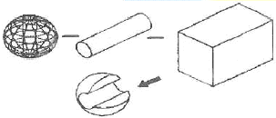
- B-rep 방식
- Trust 방식
- CSG 방식
- NURBS 방식
(정답률: 62%)
42. CAD 소프트웨어에서 3차식을 곡선방정식으로 가장 많이 사용하는 이유로 적절한 것 은?
- 복잡한 형태의 곡선을 만들 때 곡률의 연속을 보장할 수 있다.
- 2차식에 비해 계산시간이 짧게 걸린다.
- 2차식에 비해 작은 구속조건으로도 곡률을 생성할 수 있다.
- 경계조건이 모호하여도 곡률을 생성할 수 있다.
(정답률: 62%)
43. CAD/CAM 시스템에서 4개의 점의 위치벡터와 4개의 경계곡선으로부터 그 경계조건을 만족하는 내부를 연결한 곡면은?
- Coons 곡면
- Bezier 곡면
- NURBS 곡면
- B-spline 곡면
(정답률: 68%)
44. 일반적으로 CAM시스템 도입을 통해 얻을 수 있는 효과로 보기 어려운 것은?
- 고품질 제품 생산 가능
- NC 프로그램 오류 감소
- 가공 형상 단순화
- 가공 시간 단축
(정답률: 66%)
45. 커습(Cusp)은 공구 경로간격에 의해 생성되는 것으로 표면거칠기에 영향을 미친다. 공구 경로간격에 따른 커습 관계식은? (단, L=경로간격, h=cusp의 높이, R=공구반경이다.)
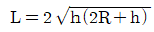
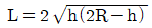
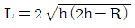
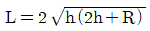
(정답률: 59%)
46. B-Rep 자료구조에서 경계를 구성하는 기본요서가 아닌 것은?
- 면(face)
- 꼭지점(vertex)
- 모서리(edge)
- 옥트리(octree)
(정답률: 77%)
47. 3차원 형상 모델을 표현하는 방식 중에서 와이어 프레임 모델링 방식의 특징이 아닌 것은?
- 데이터의 구조가 간단하여 모델링 작업이 비교적 쉽다.
- 단면도의 작성이 불가능하다.
- 보이지 않는 부분 즉 은선의 제거가 불가능하다.
- NC코드 생성이 가능하며 물리적 성질의 계산이 가능하다.
(정답률: 70%)
48. CAD 데이터 교환을 위한 표준에 대한 설명으로 옳은 것은?
- STEP은 설계 특징형상(design feature)을 표현하지 못한다.
- DXF 파일은 원래 CATIA 모델 파일 교환을 위해 개발하였다.
- STEP은 FORTRAN 언어를 사용하여 제품 데이터를 기술한다.
- IGES 파일은 Flag, Start, Global, Directory Etry, Parameter Data, Terminate의 6개의 section으로 구성된다.
(정답률: 70%)
49. NURBS 곡선에 대한 설명으로 틀린 것은?
- 타원, 포물선을 정확하게 표현할 수 있다.
- 일반 Bezier 곡선과 유리(rational) Bezier 곡선을 표현할 수 있다.
- 각 조정점에서의 자유도는 동차좌표를 포함할 경우 3개이다.
- 비주기적 매듭값이 사용될 경우, 곡선은 첫 번째와 마지막 조정점을 통과한다.
(정답률: 50%)
50. NC 공구경로 생성 시 곡면 상에서 하나의 곡면 매개변수(parameter)가 일정한 값들을 갖는 위치를 따라가는 곡선을 지그재그 형태로 공구를 앞뒤로 이동시켜 가공하는 방법은?
- Area 절삭
- 레이스(Lace) 절삭
- 등고선 절삭
- 평행경로 절삭
(정답률: 53%)
51. 적층가공 또는 RP(rapid prototyping)의 제조 방식에 대한 설명이 아닌 것은?
- 레이저 광선을 이용하여 광경화성 수지를 고화시키는 방식이다.
- CO2레이져 광선을 분말 형태의 소재의 표면에 주사하여 융화시키거나 소결시켜 결합시킨다.
- 한쪽 면에 접착제가 입혀진 종이를 가열된 롤러를 사용하여 접합시킨 후, 부품 단면층의 외곽선을 따라 레이져 광선을 주사한다.
- cutter와 같은 공구로 절삭가공을 통해 빠른 시간 안에 제작한다.
(정답률: 57%)
52. 여러 개의 NC 공작기계를 한 대의 컴퓨터에 결합시켜 제어하는 시스템은 무엇인가?
- DNC
- ERP
- FMS
- MRP
(정답률: 81%)
53. 3차원 변환 행렬을 동차 좌표계(homogeneous coordinate system)로 표현할 경우, 4×4 행렬로 표현할 수 있다. 다음 그림에서 점선으로 표시된 3×3 행렬 부분의 값과 관계 없는 변환은?
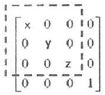
- 대칭 변환
- 이동 변환
- 회전 변환
- 확대/축소 변환
(정답률: 49%)
54. 실물의 외관을 측정하여 좌표 값을 얻는데 사용하는 장비는?
- 3차원 측정기
- 트랙볼
- 섬휠
- 밸류에이터
(정답률: 74%)
55. 다음 중 CAD 시스템에서 체적이나 무게중심을 용이하게 구하기에 가장 좋은 형상모델링 방법은?
- 솔리드(solid) 모델링
- 서피스(surface) 모델링
- 와이어프레임(wireframe) 모델링
- 쉘 유한요소(shell mesh) 모델링
(정답률: 78%)
56. 다음 중 일반적인 FMS(Flexible Manufacturing System) 의 장점으로 가장 적절하지 않은 것은?
- 인건비를 절감할 수 있다.
- 단품종 대량생산에 적합하다.
- 재고 관리와 제어가 용이하다.
- 공정변화에 대한 유연한 대처가 용이하다.
(정답률: 65%)
57. 절삭작업 시 사용하는 공구의 파손 강도가 높은 것부터 순서대로 나열되어 있는 것은?(문제 오류로 실제 시험장에서는 3, 4번이 정답 처리 되었습니다. 여기서는 4번을 누르면 정답 처리 됩니다.)
- 초경→고속도강→다이아몬드→세라믹
- 초경→고속도강→세라믹→다이아몬드
- 고속도강→초경→세라믹→다이아몬드
- 고속도강→초경→다이아몬드→세라믹
(정답률: 65%)
58. 화면의 CAD 모델 표면을 현실감 있게 채색, 원근감, 음영 처리하는 작업은 무엇인가?
- Animation
- Simulation
- Modelling
- Rendering
(정답률: 72%)
59. 형상 구속 조건과 치수 조건을 이용하여 형태를 모델링하고, 형상 구속조건, 치수값, 치수 관계식을 사용하여 효율적으로 형상을 수정하는 모델링 방법은?
- 비다양체(nonmanifold) 모델링
- 파트(part) 모델링
- 파라메트릭(parametric) 모델링
- 옵셋(offset) 모델링
(정답률: 74%)
60. 3차 곡선식 P(u)=a0+a1u+a2u2+a3u3로 주어질 때 a0, a1,a2,a3와 같은 대수 계수를 곡선의 형상과 밀접한 관계를 갖는 P0, P1,P'0, P'1과 같은 기하 계수로 바꾸어서 나타낸 것은?
- Conic 곡선
- Hermite 곡선
- Hyperbolic 곡선
- Bezier 곡선
(정답률: 55%)
4과목: 기계제도 및 CNC공작법
61. 다음 입체도를 3각법으로 나타낸 3면도 중 가장 옳게 투상한 것은? (단, 화살표 방향을 정면도 한다)(문제 복원 오류인듯 합니다. 정답은 3번입니다. 정확한 보기 내용을 아시는분께서는 관리자 메일 또는 자유게시판으로 부탁 드립니다.)
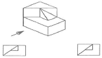
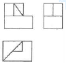
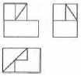
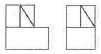
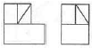
(정답률: 73%)
62. 표제란에 대한 설명으로 틀린 것은?(오류 신고가 접수된 문제입니다. 반드시 정답과 해설을 확인하시기 바랍니다.)
- 도면에 보통 마련해야 하는 항목이다.
- 제조사에 따라 양식이 다소 차이가 있을 수 있다.
- 설계자, 도명, 척도, 투상법 등을 기입한다.
- 각 부품의 명칭 및 수량을 기입한다.
(정답률: 62%)
63. 일반적으로 치수선을 그릴 때 사용하는 선의 명칭은?
- 굵은 2점 쇄선
- 굵은 1점 쇄선
- 가는 실선
- 가는 2점 쇄선
(정답률: 78%)
64. 그림은 동력전달장치의 일부분을 나타낸 것이다. 축에 끼워져 있는 베어링 번호에 맞는 베어링 안지름은 얼마인가?
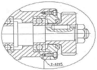
- 5mm
- 15mm
- 20mm
- 25mm
(정답률: 69%)
65. “A"와 같은 형상을 “B”에 조립시킬 때 “?”에 공통적으로 필요한 기하공차 기호는? (단, A의 형상은 이상적으로 정확한 형상이라 가정한다.)
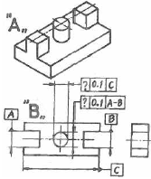
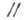
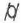
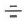
(정답률: 47%)
66. 스프로킷 휠의 도시방법에 관한 설명으로 틀린 것은?
- 바깥지름의 굵은 실선으로 그린다.
- 이뿌리원은 기입을 생략해도 무방하다.
- 피치원은 가는 파선으로 그린다.
- 항목표에는 톱니의 특성을 기입한다.
(정답률: 47%)
67. 다음 중 원통도 공차를 표시하는 기호는?
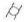
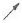
(정답률: 74%)
68. 줄 다듬질 가공을 나타내는 약호는?
- FL
- FF
- FS
- FR
(정답률: 72%)
69. 관용 테이퍼 수나사(기호 : R)에 대해서 사용하는 관용 평행 암나사의 기호로 옳은 것은?
- Rc
- Rp
- PT
- PS
(정답률: 49%)
70. 도형이 대칭인 경우 그 대칭 부분을 생략하는 기호를 옳게 나타낸 것은?
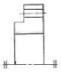
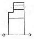
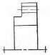
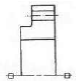
(정답률: 79%)
71. 다음 선반 외경용 툴 홀더 규격 표기법(ISO)에서 기호 P의 의미로 옳은 것은?
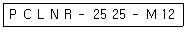
- 인서트 형상
- 절삭날 길이
- 클램핑 방법
- 인서트 여유각
(정답률: 40%)
72. 다음 CNC선반 프로그램에서 [A]의 Ud, [B]의 Dd 는 무엇을 의미 하는가?
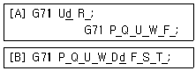
- 1회 가공의 절삭깊이량
- Z축 방향 다듬 절삭여유
- 고정사이클 지령절의 마지막 전개번호
- 고정사이클 지령절의 첫 번째 전개번호
(정답률: 64%)
73. 다음 프로그램에서 공작물의 지름이 50mm일 때 주축의 회전수는 약 몇 rpm인가?
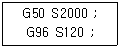
- 1910
- 1528
- 955
- 764
(정답률: 62%)
74. 와이어 컷 방전가공에서 세컨드 컷 가공의 목적과 효과가 아닌 것은?
- 코너부 형상 에러 및 가공면의 진직정도 상승효과
- 가공물의 내부 응력 개방 후의 형상수정효과
- 다이 형상에서의 돌기부분 제거효과
- 가공시간 단축효과
(정답률: 53%)
75. 가공물의 지름이 20mm인 연강을 CNC선반에서 주축 회전수 N=1500 rpm으로 절삭할 때 절삭속도는 약 몇 m/min 인가?
- 15.7
- 94.2
- 157
- 942
(정답률: 68%)
76. CNC 공작기계에서 공구의 이동위치를 지령하는 방식이 아닌 것은?
- 중심지령 방식
- 증분지령 방식
- 절대지령 방식
- 혼합지령 방식
(정답률: 71%)
77. 머시닝 센터에서 G43을 사용하여 공구길이 보정을 할 때 올바른 보정 값은 몇 mm 인 가?
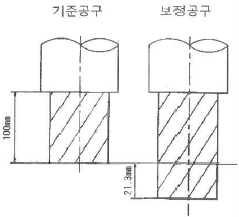
- 21.3
- -21.3
- 121.3
- -121.3
(정답률: 56%)
78. 다음 중 머시닝센터에서 급속위치결정 기능과 관계없는 것은?
- G00
- G01
- G53
- G60
(정답률: 71%)
79. 서보모터에서 검출된 위치를 피드백 하여 보정해주는 회로는?
- 가산회로
- 연산회로
- 비교회로
- 정보처리회로
(정답률: 41%)
80. CNC선반에서 작업 중 안전사항으로 옳지 않은 것은?
- 척이 풀림 상태에서 주축의 회전을 못하게 한다.
- CNC선반의 작업 시 항상 장갑을 착용하고 작업한다.
- 도어가 열린 상태에서 작업하면 알람을 발생시키도록 한다.
- 가공 중 작업자가 없을 시 프로그램을 수정하지 못하도록 한다.
(정답률: 84%)